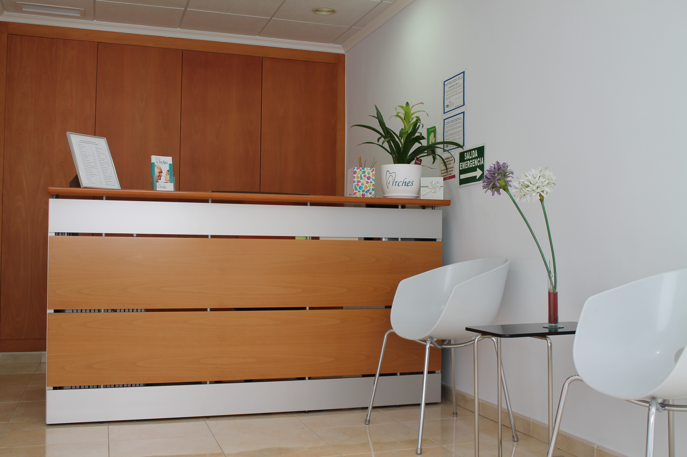
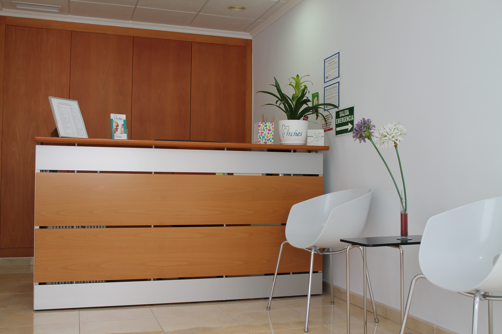
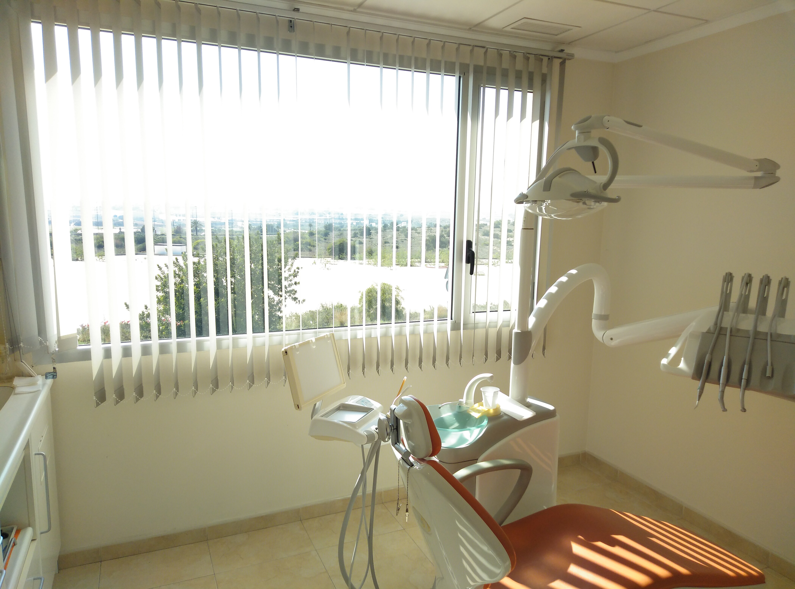
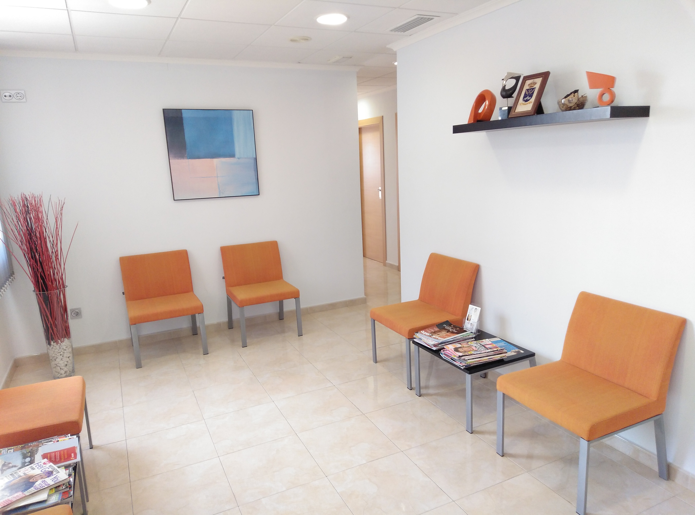
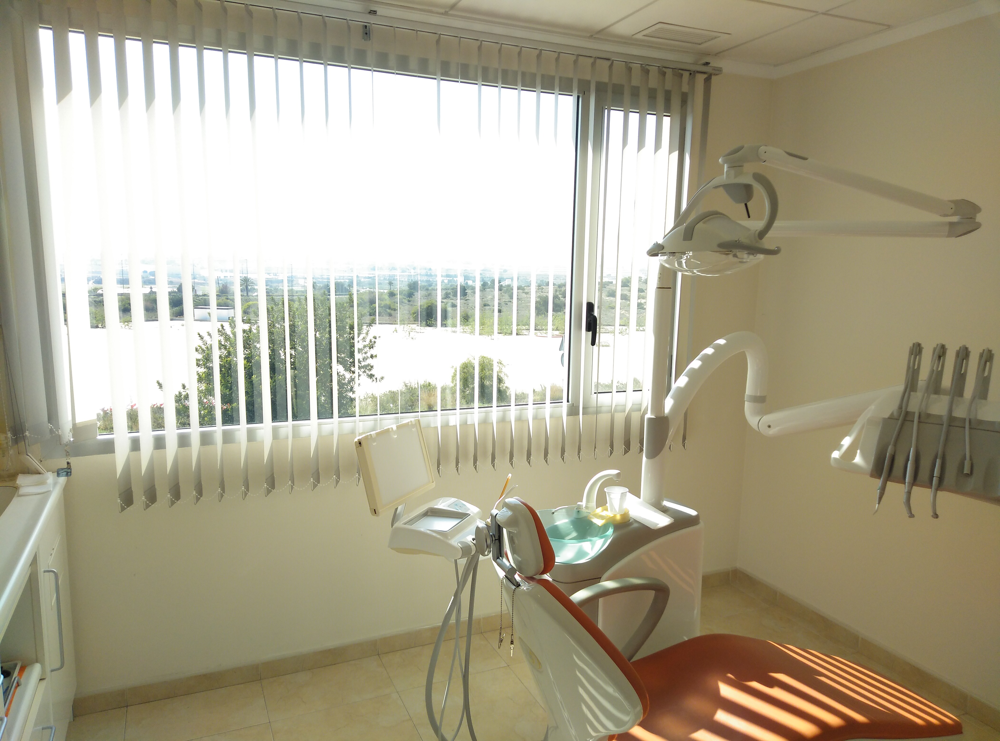
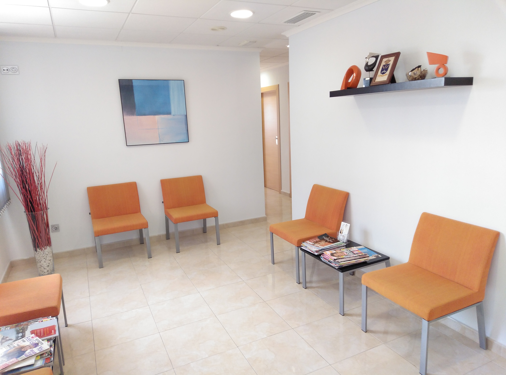

Location
At the main entrance to Quesada, turn left just in front of the arches, continue along Calle Los Arcos for approximately half a kilometre and we are on the left, in the same building as Yorkshire Linen.
 

 


